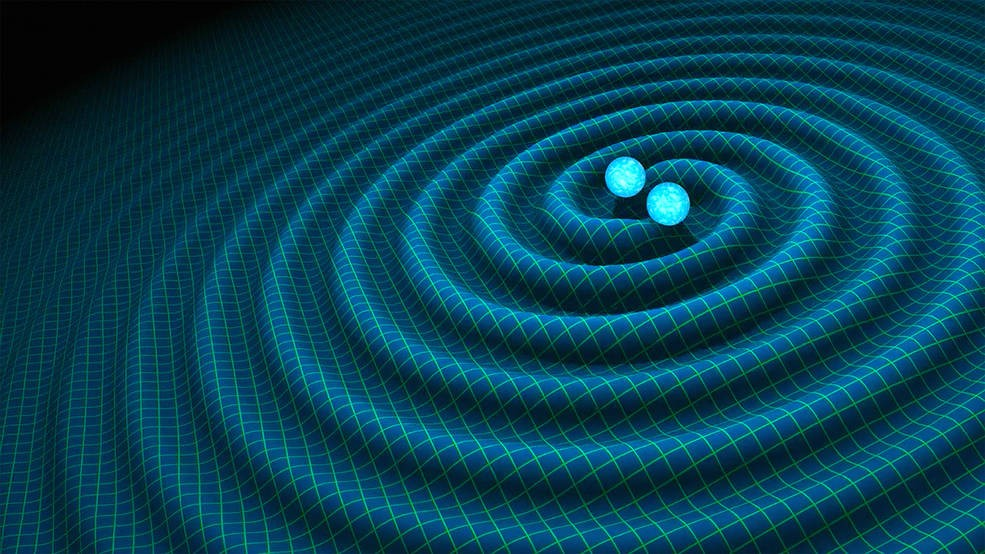

Astrônomos afirmam que existem mais buracos negros do que pensávamos
Para os cientistas, em breve, poderemos detectar mais de mil colisões dos gigantes por ano
por Nathan Fernandes

esquisadores divulgaram um estudo, na Nature, afirmando que o universo pode ter mais buracos negros do que pensávamos. E, em breve, poderemos detectar mais de mil fusões destes gigantes por ano, com a próxima geração de detectores de ondas gravitacionais, que serão mais sensíveis do que Observatório de Ondas Gravitacionais por Interferômetro Laser (LIGO), o responsável por detectar as primeiras fusões.
Considerando que até agora só conseguimos detectar as ondas por duas vezes, essa é uma notícia animadora para a comunidade científica, uma vez que os dados gerados podem dar explicações sobre a origem e a composição do universo — lembrando que conhecemos apenas 4% dele.
“O universo não é o mesmo em todos os lugares”, afirma o co-autor do estudo Richard O’Shaughnessy, do Instituto Rochester de Tecnologia. “Alguns lugares produzem mais buracos negros binários do que outros. Nosso estudo leva essas diferenças em consideração.”
Para chegar à conclusão, os pesquisadores desenvolveram um complexo modelo matemático do cosmo. Ninguém sabe ainda se ele está correto, mas, como o modelo previu a primeira detecção de ondas gravitacionais, as chances são grandes. Além disso, os cientistas do LIGO também sugerem a existência de muitas outras colisões de buracos negros a serem descobertas.
A questão é que o tipo de buraco negro que produz ondas como as que foram detectadas é diferente da maioria dos outros buracos negros. Eles são bem maiores do que o normal, porque foram formados a partir de estrelas que têm massa até 100 vezes maior do que o nosso Sol. Ou seja, eles são monstruosos e gigantescos até para os padrões dos buracos negros. E, apesar das colisões não afetarem suas posições, elas influenciam a órbita dos buracos menores que estão por perto.
Segundo O’Shaughnessy, o LIGO não vai conseguir fazer mil detecções por ano, mas eles estão otimistas porque os próximos instrumentos desenvolvidos vão ser mais potentes e poderão nos ajudar a chegar mais perto de resolver os mistérios do univeros.
Via Science Alert